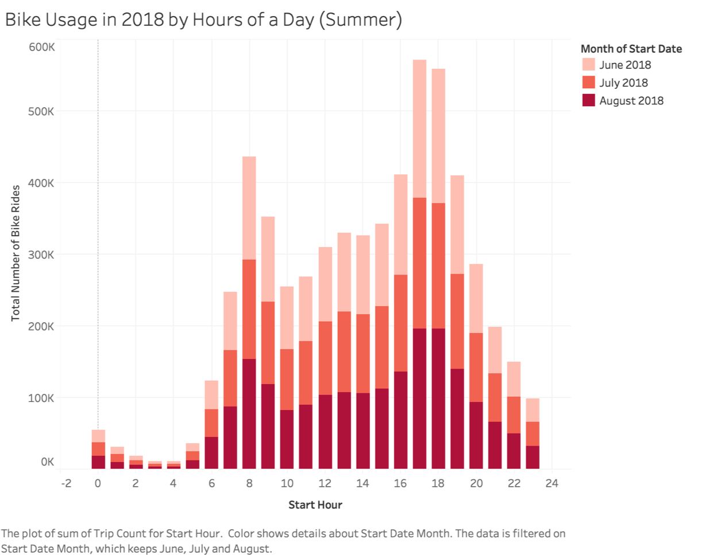
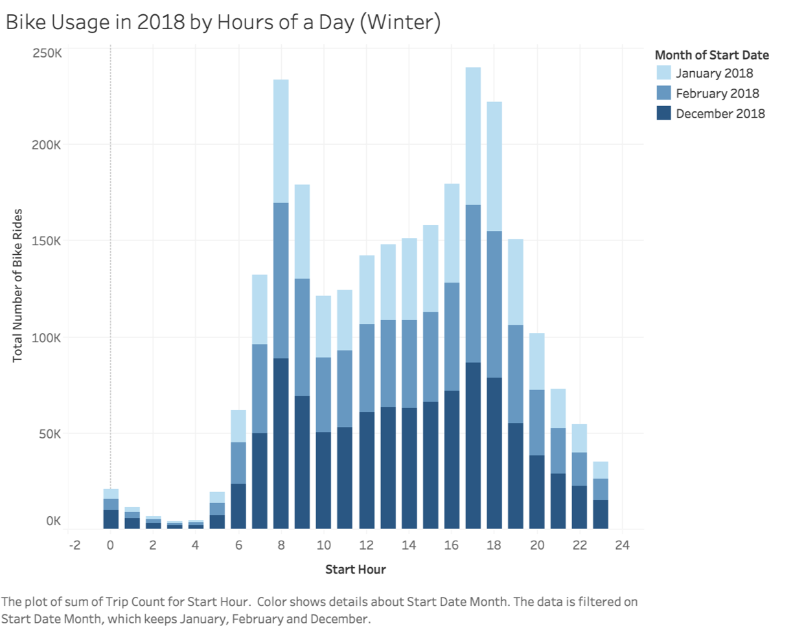

Bike Usage and Weather Parameters Analysis All Cities
BikeShare Programs Usage by Months
Summer (Jun, July, August) is the most popular time of the year for BikeShare programs in general,
where as winter months (January, February, December) are the least popular time of the year.
For example the 2018 usage analysis of NYC Citibike:
Summer (Jun, July, August):
Total riderships up to 1500/hrs

Winter (January, February, December):
Total riderships up to 650/hrs

Weather Data Source: National Climatic Data Center (NCDC)
Selection of parameters:
TAVG: Temp Average (Fahrenheit)
TMAX: Temp Max (Fahrenheit)
TMIN: Temp Min (Fahrenheit)
PRCP: Precipitation (in inches) *This is all types of precipitation (melted and frozen)
AWND: Average wind speed (in miles per hour)
SNWD: Snow depth (in inches) *Snow, Ice Pellets, Hail, Ice on Ground (in) at time of observation*